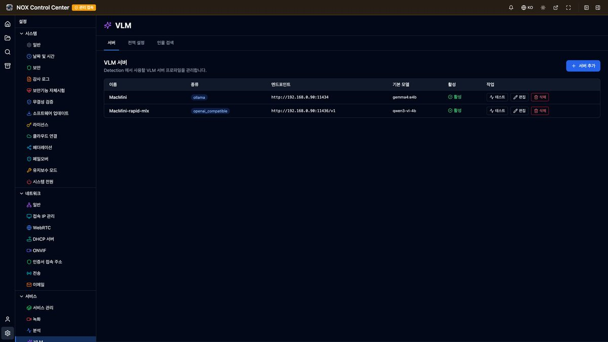
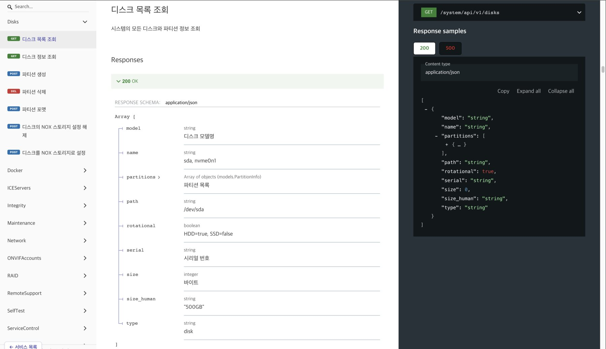
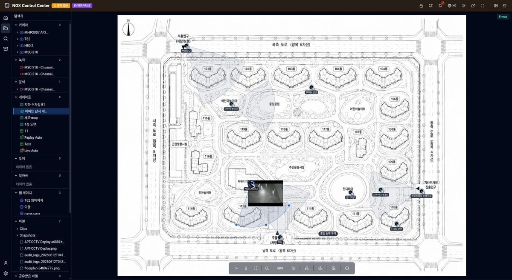

NOX 위에서 시작하는 맞춤 개발
Custom development that starts on NOX
영상 수집·저장·관제·권한은 NOX가 이미 갖추고 있습니다. 처음부터 만들지 않고, 현장에 필요한 부분만 개발합니다.
NOX already handles capture, storage, monitoring, and access control. Nothing starts from scratch; we build only what your site needs.
현장 특화 개발 · YIYOLSite-specific development · YIYOL
NOX 기반 · 이미 갖춘 기능NOX base · already in place
- 녹화 · 저장Recording · storage
- 검색 · 재생Search · playback
- 통합 관제Monitoring
- 권한 · 감사 로그Access · audit log
- n:1 이중화n:1 failover
- REST API · WebHook

01
AI 분석·자동화 개발
AI analysis & automation
현장에서 잡아야 할 상황을 Vision AI가 감지하고 VLM·LLM Agent가 판단해, 정해 둔 후속조치까지 실행하도록 개발합니다.
Vision AI detects the situations your site must catch, a VLM or LLM agent judges them, and the follow-up you defined is executed.
- 현장별 감지 대상과 판단 기준 정의Per-site detection targets and judgment criteria
- Vision AI·VLM 모델 적용 및 교체Applying and swapping Vision AI and VLM models
- 알림·방송·설비 제어 등 후속조치 시나리오Follow-up scenarios: alerts, PA, machine control
- 판단 근거와 조치 이력 기록Logging the reasoning and the actions taken

02
외부 시스템 연동 개발
Integration with your systems
NOX의 REST API와 WebHook으로 현장에서 쓰고 있는 시스템과 장비를 양방향으로 연결합니다. 기존 장비는 교체하지 않습니다.
NOX's REST API and WebHooks connect both ways to the systems and equipment already on site. Nothing installed is replaced.
- ERP·MES 이벤트 전송과 작업 지시 연동ERP and MES events and work orders
- Modbus·MQTT·시리얼·PLC 장비 연결Modbus, MQTT, serial, and PLC equipment
- 출입 통제·방송·경광등 제어Access control, PA, and beacon control
- 상위 VMS 편입 (ONVIF 서버)Joining an upstream VMS (ONVIF server)

03
현장 전용 UI·기능 커스터마이징
Site-specific UI & features
관제 화면, 대시보드, 리포트를 현장의 운영 방식에 맞춰 개발합니다. 운영자가 쓰는 순서대로 화면을 구성합니다.
Monitoring screens, dashboards, and reports are built around how your site actually operates, in the order your operators work.
- 현장 도면 기반 E-map 구성E-maps built on your site plans
- 운영 대시보드와 리포트Operations dashboards and reports
- 현장 전용 메뉴와 업무 흐름Site-specific menus and workflows
- 권한 체계와 감사 로그 요구사항 대응Access models and audit-log requirements
04
OEM·화이트라벨 개발
OEM & white-label
NOX의 수집·AI 판단·실행 코어를 파트너 제품에 임베드해 파트너 브랜드로 공급할 수 있도록 개발합니다. 하드웨어 제조사와 SI 파트너는 별도의 소프트웨어 개발 없이 AI 자동화를 지원하는 제품을 확보합니다.
The NOX capture, AI judgment, and execution core is embedded into a partner product and supplied under the partner's own brand. Hardware manufacturers and SI partners obtain a product with AI automation without undertaking separate software development.
- 화이트라벨 빌드 · 파트너 브랜딩White-label builds and partner branding
- 맞춤 기능 개발 · 외부 시스템 연동Custom feature development and integrations
- Vision AI·VLM 등 다양한 AI 모델 적용 지원Apply various AI models such as Vision AI and VLM
- 고객사 현장별 자동화 시나리오 구성 지원Support for building per-site automation scenarios for your customers
진행 절차
How a project proceeds
개발에 앞서 어떤 상황이 문제인지, 그 상황에서 무엇이 실행되어야 하는지부터 함께 정리합니다.
Before any development, we establish with you which situation is the problem and what should happen when it occurs.
-
01
문제 정의
Define the problem
검출 대상 상황과 검출 시 수행할 조치를 현업과 함께 구체화합니다.
Work with your operators to pin down which situations must be caught, and what should happen when they are.
-
02
PoC 검증
Prove it
실제 현장 데이터로 판단 정확도를 검증합니다. 오탐·미탐 수준을 확인하신 후 도입 여부를 결정하실 수 있습니다.
Accuracy is validated against your real data. The false-positive and miss rates are reviewed before any commitment.
-
03
구축 · 연동
Build & integrate
카메라·센서·설비와 기간계 시스템을 연결하고, 상황별 후속조치를 정의해 자동화합니다.
Connect cameras, sensors, machines, and back-office systems, then define and automate the follow-up per situation.
-
04
운영 · 개선
Operate & improve
운영 중 발생한 오탐·미탐을 반영해 판단 기준과 조치 시나리오를 지속 보완합니다.
Feed real misses and false alarms back in, and keep refining both the judgment criteria and the action scenarios.